Bayesian Marginal Reconstruction Simulations
Nathan Morris
2020-07-14
Source:vignettes/tboot_bmr_vs_joint_bayes.Rmd
tboot_bmr_vs_joint_bayes.RmdIntroduction
The following example is conceived to demonstrate the similarity of results from Bayesian Marginal Reconstruction (BMR) to full joint Bayesian analysis.
The Example Scenario and Simulated Datasets
First, we create a sscenario where we assume we have 4 variables each of which is binary leading to \(2^4=16\) possible outcomes in combination. We assign probabilities to each combination for 2 different simulated scenarios.
library(tboot)
library(ggplot2)
possible_values=as.matrix(expand.grid(x1=c(0,1),x2=c(0,1),x3=c(0,1),x4=c(0,1)))
head(possible_values)## x1 x2 x3 x4
## [1,] 0 0 0 0
## [2,] 1 0 0 0
## [3,] 0 1 0 0
## [4,] 1 1 0 0
## [5,] 0 0 1 0
## [6,] 1 0 1 0normalize=function(x) x/sum(x)
#sceanario 1 assigns some probability to each possible_value
M=rbind(c(-2.7, 0, 0, 0),
c(4.05, -2.7, 0, 0),
c(-0.13, 3.48, -3.13, 0),
c(1.49, -2.12, 2.9, -1.13))
prob_1=normalize(exp( apply(possible_values, 1,
function(x) x%*%M%*%x)))
#sceanario 2 exontially tilts scenario 1
prob_2=normalize(prob_1*exp( apply(possible_values, 1,
function(x) .5*sum(x)))) To understand the probabilities above consider the following correlation and mean for the binary variables being simulated:
scenarioCorrelation=function(wt) {
mycov=cov.wt(possible_values,wt)
return(cov2cor(mycov$cov))
}
scenarioMean=function(w)
t(crossprod(possible_values,w))
round(scenarioCorrelation(prob_1),2)## x1 x2 x3 x4
## x1 1.00 0.75 0.5 0.3
## x2 0.75 1.00 0.6 0.2
## x3 0.50 0.60 1.0 0.5
## x4 0.30 0.20 0.5 1.0## x1 x2 x3 x4
## [1,] 0.5 0.5 0.5 0.5## x1 x2 x3 x4
## x1 1.00 0.71 0.43 0.25
## x2 0.71 1.00 0.54 0.15
## x3 0.43 0.54 1.00 0.45
## x4 0.25 0.15 0.45 1.00## x1 x2 x3 x4
## [1,] 0.78 0.78 0.78 0.72Next we simulate data sets with a range of sample sizes. For each possible sample size we simulate 20 datasets.
sim = function(N_per_datset,N_datasets, p) {
replicate(N_datasets, {
index=sample.int(nrow(possible_values), N_per_datset,replace = TRUE, prob=p)
possible_values[index,]
}, simplify = FALSE)
}
ss=c(25, 50, 200, 400)
sim_data_1= lapply(ss, function(N_per_datset)
sim(N_per_datset,20,prob_1))
sim_data_2= lapply(ss, function(N_per_datset)
sim(N_per_datset,20,prob_2))
names(sim_data_1)=names(sim_data_2)=paste0("N=",ss)The Posterior from BMR and Full Bayesian Analysis are Similar
Using the above simulated datasets we use marginal Bayesian calculations followed by BMR to sample from the joint posterior. We assume a simple uniform prior for the marginal simulations.
set.seed(2020)
#this function doest the actual analysis
get_post_bmr= function(marginal_data,individual_data) {
marginal=lapply(data.frame(marginal_data),
function(x)
rbeta(5000,sum(x)+1, sum(x==0) + 1))
w=tweights_bmr(individual_data, marginal,
silent = TRUE, warningcut = .1)
return(post_bmr(5000, w))
}
#If twieights or tboot throw an error or warning assume
# (i.e. BMR analysis should not be performed in these cases)
missingSim=matrix(NA,2500,4); colnames(missingSim)=c("x1","x2","x3","x4")
#analyze all simulated datasets
anayze_all_BMR=function(sim_dta, sim_dta_cor) {
mapply(function(s1a,s2a) { #loop over sample sizes
mapply(function(s1b,s2b) { #loop over simulations
tryCatch(get_post_bmr(s2b, s2b),
error=function(e) return(missingSim),
warning=function(w) return(missingSim))
},s1a, s1a, SIMPLIFY=FALSE)
},sim_dta, sim_dta_cor, SIMPLIFY=FALSE)
}
#infer correlation from the same dataset
bmr_results_1=anayze_all_BMR(sim_data_1,sim_data_1)
#infer the correlation from a different dataset
bmr_results_2=anayze_all_BMR(sim_data_1,sim_data_2)Next we analyze these datasets by using a fully Bayesian analysis. We consider that the prior probabilities assigned to each possible outcome (i.e., 2^4 possible outcomes) follow a Dirichlet prior with parameter rep(1/8,16). This prior is marginally uniform for each variable.
rdirichlet = function(n, alpha) {
x <- matrix(rgamma(n*length(alpha), alpha), nrow=length(alpha))
return( t(x) / colSums(x))
}
joint_bayes=function(dta) {
dta_factor=factor(apply(dta, 1, function(x) paste0(x, collapse = ",")),
levels = apply(possible_values,
1, function(x) paste0(x, collapse = ",")))
tbl=table(dta_factor)
post_prob=rdirichlet(5000, as.vector(tbl)+2/(2^4))
prob_proportions=post_prob %*% possible_values
return(prob_proportions)
}
anayze_all_joint=function(sim_dta, sim_dta_cor) {
lapply(sim_dta, function(sa) { #loop over sample sizes
lapply(sa, function(sb) { #loop over simulations
return(joint_bayes(sb))
})
})
}
joint_results=anayze_all_joint(sim_data_1)Next we set up several functions to graphically compare the two methods. We will use a series of Bland–Altman plots to compare properties of the distributions. In all of these graphs, each dot represents a posterior values (such as median, correlation or quantile) from a simulated sample of size N.
#Extract any summary measure of interest for the data.
# g is the function that specifies which property to extract
get_property=function(g) {
ret=do.call(rbind, mapply(function(s1a,s2a,s3a, N) { #loop over sample sizes
ret=do.call(rbind,mapply(function(s1b,s2b, s3b) { #loop over simulations
J=g(s3b)
b1=g(s1b)
b2=g(s2b)
return(data.frame(N=N,
analysis=c("Marginals Generated\nfrom Individual Data",
"Marginal Generated\nfrom Seperate Data"),
dif=c(b1-J, b2-J),mean=c((b1+J)/2, (b2+J)/2)))
},s1a,s2a,s3a, SIMPLIFY = FALSE))
ret$sim_id=rep(1:(nrow(ret)/2), each=2)
return(ret)
},bmr_results_1, bmr_results_2, joint_results, names(bmr_results_1), SIMPLIFY = FALSE))
rownames(ret)=NULL
ret=na.omit(ret)
return(ret)
}
make_graph=function(g,title) {
pltdta=get_property(g)
ggplot(pltdta, aes(y=dif, x=mean, color=N)) +
geom_point() + ggtitle(title) + facet_grid(~analysis) +
geom_hline(yintercept=0) + ylab("Difference(BMR-Joint)") + xlab("Mean (BMR+Joint)")
}Now we investigate the marginals graphically. As may be seen the quantiles and median of the joint method and BMR are very similar. The similarity grows stronger as the sample size increases.
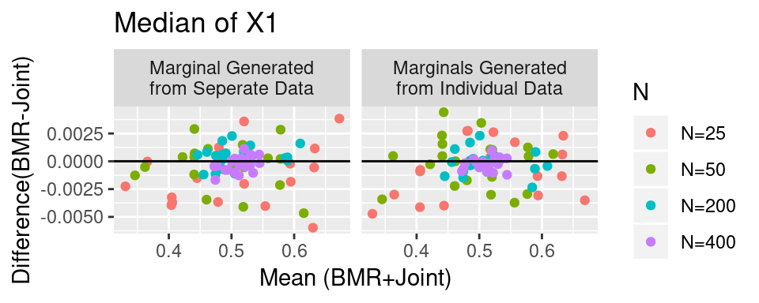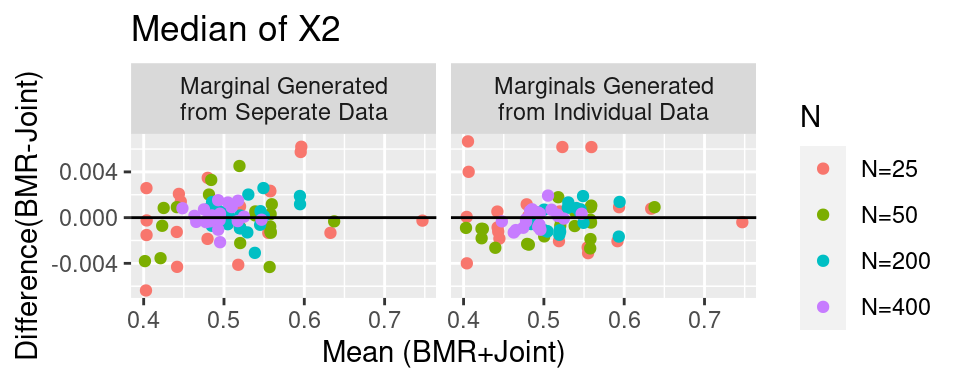 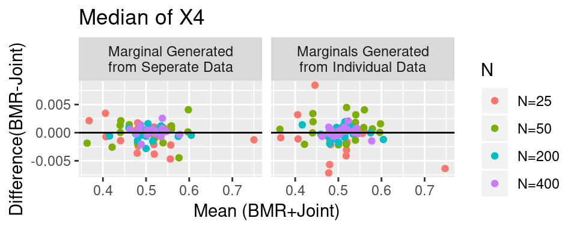
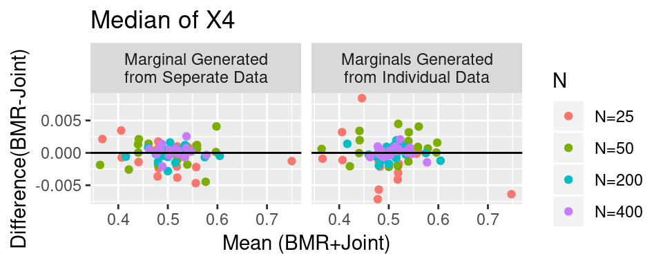
for(i in 1:4)
show(make_graph(function(d) quantile(d[,i], .05, na.rm=TRUE),
paste0("5% Quantile of X",i)))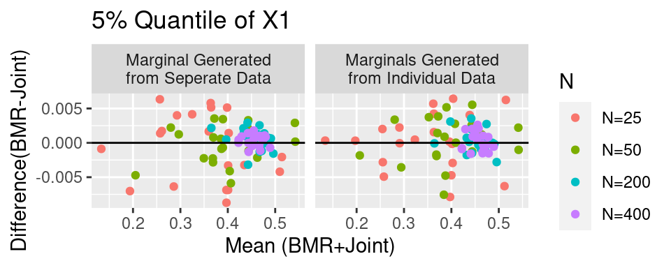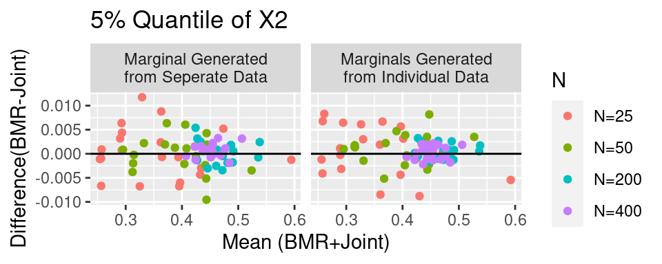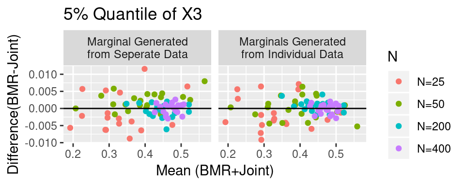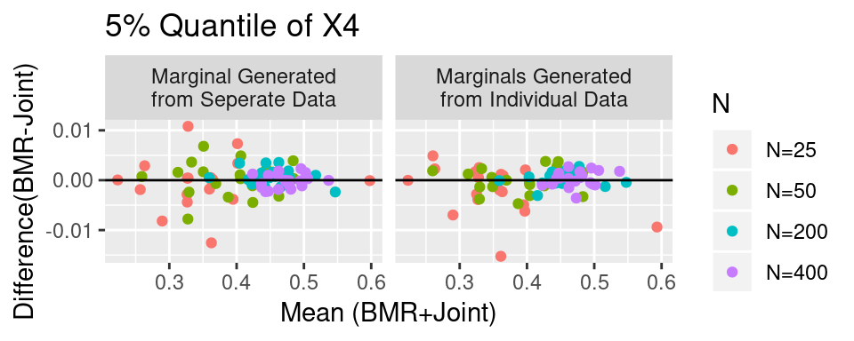
for(i in 1:4)
show(make_graph(function(d) quantile(d[,i], .95, na.rm=TRUE),
paste0("95% Quantile of X",i)))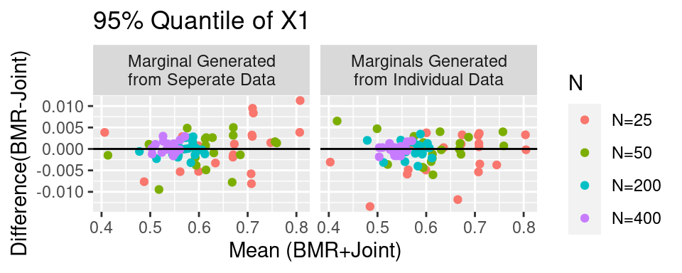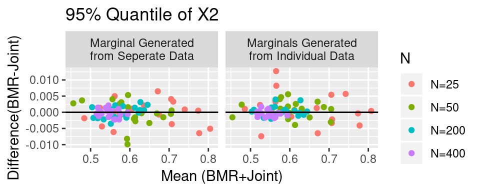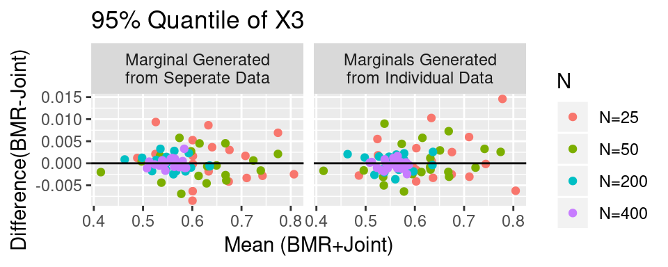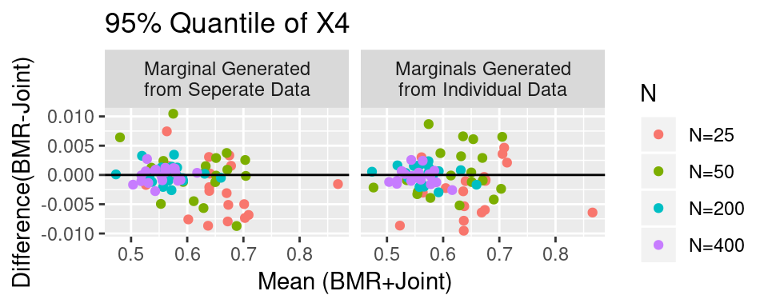
Similarly we investigate the correlation between several variables. We will not print out all the correlations.
for(i in 1:3)
for(j in (i+1):4)
show(make_graph(function(d) cor(d[,i],d[,j]),
paste0("Correlation of X",i, " and X",j )))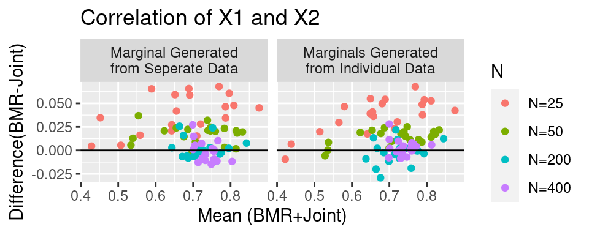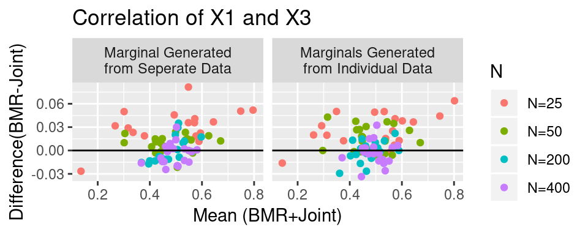 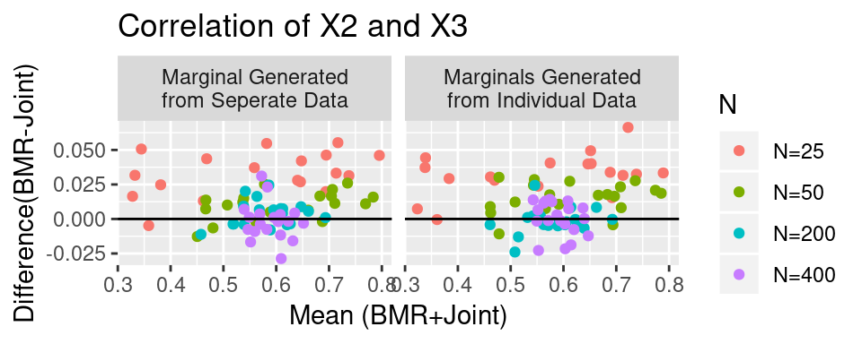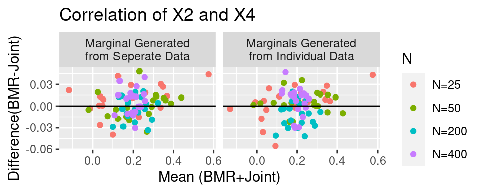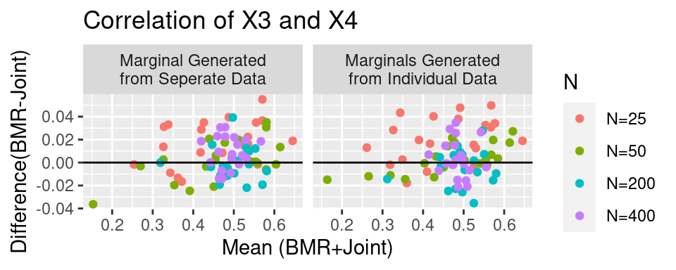
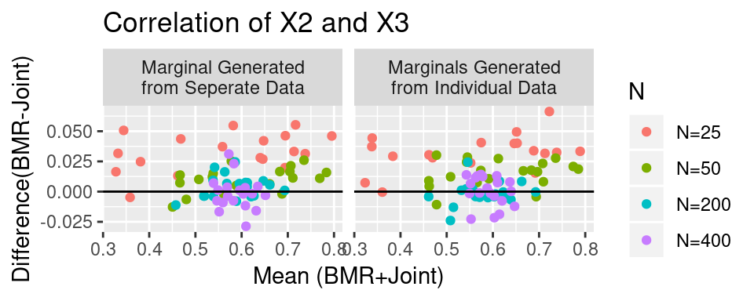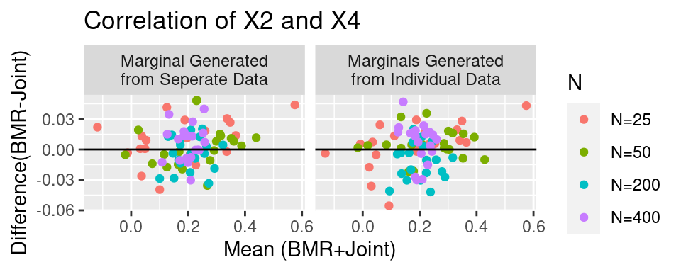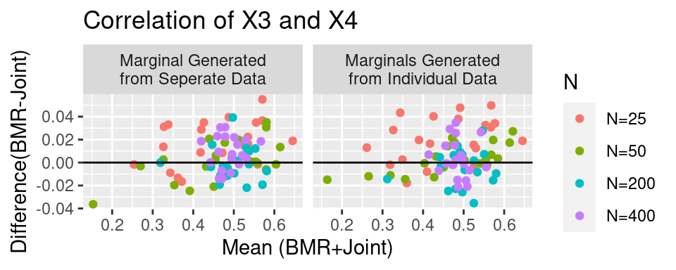
Next we investigate the quantiles in several random directional transformations of the space:
for(i in 1:5) {
direction=rnorm(4)
direction=direction/sum(direction^2)
show(make_graph(
function(d) {
quantile(d %*% direction, .95, na.rm=TRUE)},
paste0("Quantile of p %*% c(",paste(round(direction,2), collapse=","),")")
)
)
}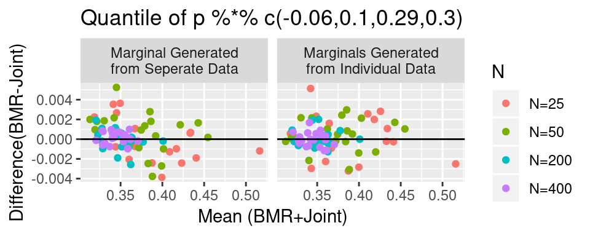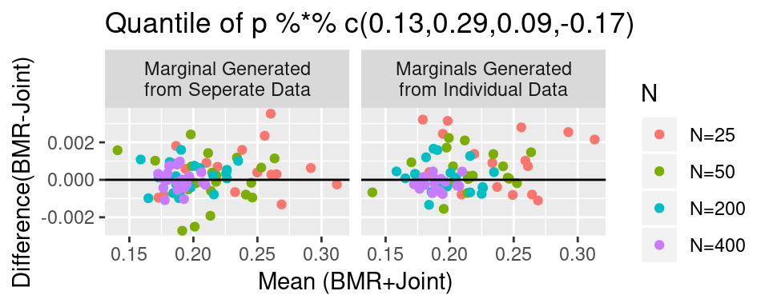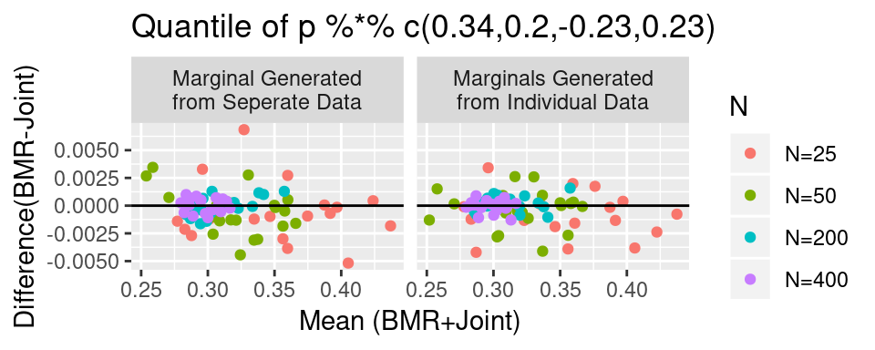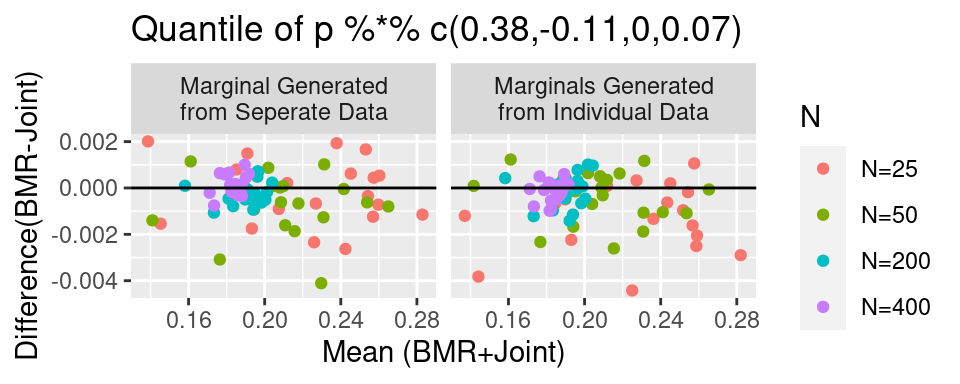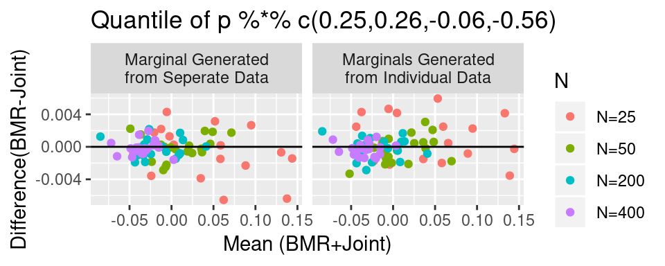
For all of these plots it may be seen that the BMR approach is quite similar to the full Bayes approach. The difference between quantiles and point estimates is very small on the y axis of each plot.
Trial Design Simulation Results
Consider that we want to test the hypothesis for each variable that the proportion is 0.6. We wish to calculate the probability of succeeding (with p-value 0<.05) on ALL 4 endpoints with a future trial sample size of 400. Note that simultanious success on 4 different endpoints requires that correlation between endpoints be appropriately considered.
Also, consider that the data available for trial design comes from a sample size of 50 patients as previously simulated. It is expected that a larger samples size for the design data would only make the results from different methods more similar. We will only look at 5 simulated datasets because the simulation is computationally expensive with 1000 future simulated trials based on each dataset.
set.seed(2020)
sim_data_1_50= sim_data_1[["N=50"]][1:5]
sim_data_2_50= sim_data_2[["N=50"]][1:5]
#this function simulates a series of trials with success or failure
#for each trial using tboot_bmr
get_trial_pobS_bmr= function(marginal_data,individual_data) {
marginal=lapply(data.frame(marginal_data),
function(x)
rbeta(5000,sum(x)+1, sum(x==0) + 1))
w=tweights_bmr(individual_data, marginal,
silent = TRUE, warningcut = .15)
S=t(replicate(1000, {
dta=tboot_bmr(400, w)
p=colMeans(dta)
se=sqrt(p*(1-p)/nrow(dta))
abs(p-.6)/se>qnorm(0.975) #success for a 2-sided alpha 0.05
}))
#return the proportion of time we succeed on all endpoints
return(mean(apply(S,1,all)))
}
#this function simulates a series of trials with success or failure
#for each trial using full Bayes analysis
get_trial_probS_joint= function(dta) {
dta_factor=factor(apply(dta, 1, function(x) paste0(x, collapse = ",")),
levels = apply(possible_values,
1, function(x) paste0(x, collapse = ",")),
ordered = TRUE)
tbl=table(dta_factor)
post_prob=rdirichlet(1000, as.vector(tbl)+2/(2^4))
S=t(apply(post_prob, 1, function(p) {
index=sample.int(nrow(possible_values), 400,replace = TRUE, prob=p)
dta=possible_values[index,]
p=colMeans(dta)
se=sqrt(p*(1-p)/nrow(dta))
abs(p-.6)/se>qnorm(0.975) #success
}))
#return the proportion of time we succeed on all endpoints
return(mean(apply(S,1,all)))
}
#infer correlation from the same dataset
bmr_probS_1=mapply(get_trial_pobS_bmr, sim_data_1_50, sim_data_1_50)## Warning in value[[3L]](cond): Resimulating new draw from posterior becuase
## unable to find weights which achieve current sim from posterior. Optimization
## failed. Maximum iterations reached.#infer the correlation from a different dataset
bmr_probS_2=mapply(get_trial_pobS_bmr, sim_data_1_50, sim_data_2_50)## Warning in .print_ret(originalDataset, weights = opt$weights, dataset, target, : Some of the weights are larger than 0.15. Thus your bootstrap sample may be overly dependent on a few samples. See vignette.As may be seen below, the 3 methods yield very similar results.
## bmr_probS_1 bmr_probS_2 joint_probS
## 1 0.143 0.133 0.165
## 2 0.122 0.167 0.145
## 3 0.733 0.698 0.701
## 4 0.280 0.275 0.288
## 5 0.099 0.089 0.098